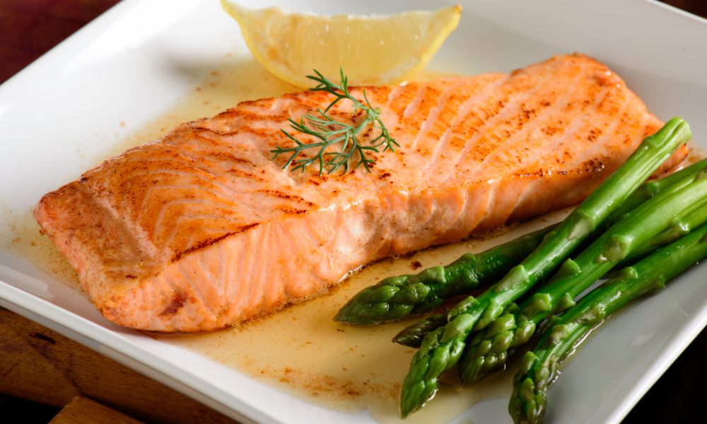

Sopa

Caldo Verde
Sopa tradicional portuguesa com couve galega, batata e chouriço. Reconfortante e saborosa.
35 minSopa de Legumes
Sopa nutritiva e colorida com uma variedade de legumes frescos. Perfeita para qualquer época do ano.
40 minCarne
Bife Grelhado com Batatas
Bife suculento grelhado acompanhado de batatas fritas crocantes. Um clássico português.
30 minFrango Assado no Forno
Frango inteiro assado com batatas, alho e ervas aromáticas. Perfeito para refeições em família.
90 minPeixe
Salmão Grelhado
Filetes de salmão temperados com limão e ervas, grelhados até ficarem suculentos.
30 min
Bacalhau à Brás
Prato tradicional português com bacalhau desfiado, batata palha e ovos. Um dos clássicos mais amados.
45 minSobremesas
Bolo de Chocolate
Bolo fofo de cacau com cobertura cremosa, perfeito para festas ou um lanche reconfortante.
45 minTarte de Maçã
Massa crocante recheada com maçãs caramelizadas e um toque de canela.
Sirva morna com gelado de baunilha para uma sobremesa clássica.
50 minVegan
Curry de Grão com Vegetais
Curry aromático vegan com grão-de-bico, legumes e especiarias. Saudável, nutritivo e cheio de sabor.
35 minBowl Buddha Vegan
Bowl nutritivo e colorido com quinoa, vegetais assados, hummus e sementes. Completo e equilibrado.
40 minRápidas
Salada Mediterrânea
Mix de tomate, pepino, azeitonas e queijo feta com molho de azeite e oregãos.
20 minWrap de Frango e Vegetais
Wrap rápido e saboroso com frango grelhado, vegetais frescos e molho de iogurte. Pronto em minutos.
15 min